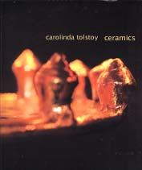
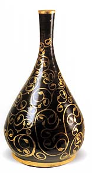
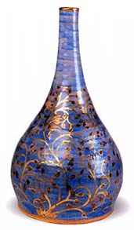
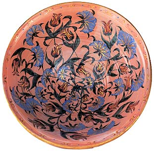
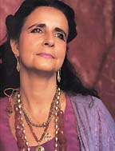

| Carolinda
Tolstoy Ceramics
by Ernst J. Grube. Review by Steven Goldate.
Carolinda
Tolstoy is the descendant of an old Middle Eastern family,
which is also connected to one of Russia's prominent families. She
draws inspiration from various sources, including Russian architecture
and the pottery of the Middle East. The result is a style of pottery
displaying these influences but representing a style unique to Tolstoy.
Characteristic of her work is a flowing and playful, stylized floral
decoration rooted in Ottoman design and sometimes reminiscent of
William De Morgan's work. This is combined with gold luster and
other metallic lusters.

German-born
author Ernst J. Grube was professor of Islamic Art at the University
of Venice in Italy from 1977-88. Before that he worked with the
Berlin Museum, the Metropolitan Museum of Art in New York, the City
University of New York and the University of Padua in Italy. He
is considered one of the world's authorities on Islamic art.
His monograph
on Carolinda Tolstoy is more than just a song of praise
about an accomplished potter. It also takes us through sections
of the history of ceramics, in particular those connected with Tolstoy's
work, placing it in a historical context - Islamic ceramics, maiolica
(tin-glazed pottery), luster as well as the influence of William
De Morgan's Oriental ceramics.

Photo by Igor Tolstoy |
Following the introduction to the historical context of Tolstoy's
technique, Grube follows on with a concrete analysis of her work.
This is divided into a brief look at her early work, followed by
an analysis of various motifs and decorative devices she uses in
her work: tulips, carnations, lilies, scrolls tears and arabesques.
Grube's monograph is not too heavy on text, concentrating on Tolstoy's
skillfully created and richly decorated ceramic vessels. The book
is richly illustrated throughout in color and the print quality
is impeccable. Carolinda Tolstoy - Ceramics' will make a wonderful
addition to anyone's library who is interested in contemporary ceramics
or even Islamic pottery. But beware, you may find yourself lusting
after one of Tolstoy's pieces after getting your appetite whetted
by this beautifully made publication!
Carolinda Tolstoy Ceramics, by Ernst J. Grube is available on amazon.co.uk,
IBSN 1 874044 56 2. Visit Carolinda's website at www.carolinda-tolstoy.co.uk.
More Book Reviews
More Articles
|